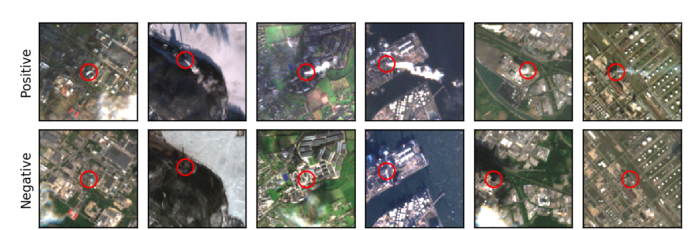
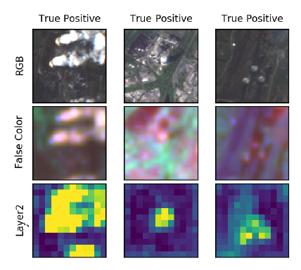
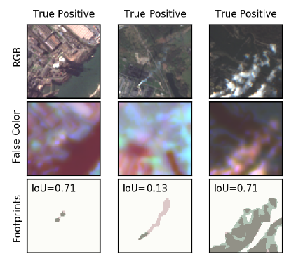

The major driver of global warming has been identified as the anthropogenic release of greenhouse gas (GHG) emissions from industrial activities. The quantitative monitoring of these emissions is mandatory to fully understand their effect on the Earth’s climate and to enforce emission regulations on a large scale. In this work, we investigate the possibility to detect and quantify industrial smoke plumes from globally and freely available multi-band image data from ESA’s Sentinel-2 satellites.
{kind=link}

Classification of Smoke Plumes
Using a modified ResNet-50, we can detect smoke plumes of different sizes with an accuracy of 94.3%. The model correctly ignores natural clouds and focuses on those imaging channels that are related to the spectral absorption from aerosols and water vapor, enabling the localization of smoke.
{kind=link}

Segmentation of Smoke Plumes
We exploit this localization ability and train a U-Net segmentation model on a labeled sub-sample of our data, resulting in an Intersection-over-Union (IoU) metric of 0.608 and an overall accuracy for the detection of any smoke plume of 94.0%; on average, our model can reproduce the area covered by smoke in an image to within 5.6%. The performance of our model is mostly limited by occasional confusion with surface objects, the inability to identify semi-transparent smoke, and human limitations to properly identify smoke based on RGB-only images. Nevertheless, our results enable us to reliably detect and qualitatively estimate the level of smoke activity in order to monitor activity in industrial plants across the globe. Our data set and code base are publicly available.
{kind=link}

This work was presented at the ``Tackling Climate Change with Machine Learning’’ Workshop at the NeurIPS 2020 conference and the 2021 NVIDIA GTC conference. We made the code and data set from this work available online.
This work was extended by our PhD student Joelle. Checkout her updates here.
Resources
-
Mommert, M., Sigel, M., Neuhausler, M., Scheibenreif, L., Borth, D., “Characterization of Industrial Smoke Plumes from Remote Sensing Data”, Tackling Climate Change with Machine Learning Workshop, NeurIPS 2020.
-
Mommert, M. et al. 2020: dataset
-
Mommert, M. et al. 2020: code
-
Mommert, M., “Characterizing Industrial Smoke Plumes from Remote Sensing Data with Deep Learning”, oral presentation at NVIDIA GTC21.